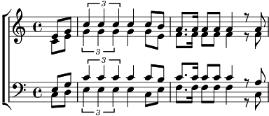

Refrain:
Ça fait rire les oiseaux, ca fait chanter les abeilles
Ça chasse les nuages et fait briller le Soleil
Ça fait rire les oiseaux et danser les écureuils
Ça rajoute des couleurs aux couleurs de l'arc-en-ciel (2x)
Ça fait rire les oiseaux owowoh
Rire les oiseaux
1. Une chanson d'amour c'est comme un looping en avion
Ça fait battre le cœur des filles et des garcons
Une chanson d'amour c'est de l'oxygène dans la maison
Tes pieds touchent plus par terre et t'es en lévitation
Si y a de la pluie dans ta vie, si le soir te fait peur
La musique est là pour ca
Y a toujours une mélodie pour les jours meilleurs
Allé tape dans ta mains, ca porte bonheur
C'est magique un refrain qu'on reprend tous en cœur
Refrain
2. T'es revenu chez toi la tête pleine de souvenirs
Des soirs au clair de lune, des moments de plaisir
T'es revenu chez toi et tu veux déjà repartir
Retrouver l'aventure qui n'aurras pas de fini
Si y a du gris dans tes nuits
Et des larmes dans ton cœur
La musique est là pour ca
Y a toujours une mélodie pour les jours meilleurs
Allez frappe dans tes mains
Ça porte bonheur
C'est magique un refrain qu'on reprends tous en cœur
Refrain